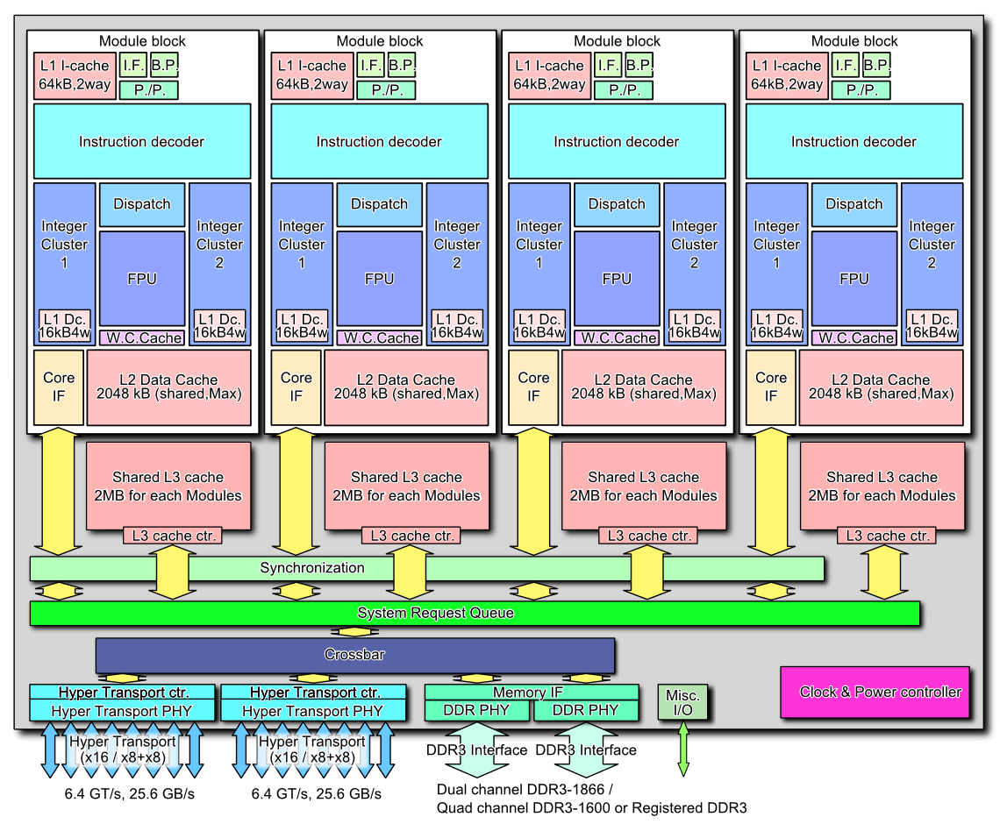

Об AMD FX
AMD FX - это процессор, вышедший в 2011 году. Благодоря низкой производительности на ядро процессор не мог конкурировать с процессорами от Intel, такими как Sandy Bridge.
Однако, потом когда игры научились использовать 8 потоков, FX показывает хороший результат, особо если его разогнать
Первым семейством процессоров микроархитекуры Bulldozer стало настольное семейство Zambezi во 2 квартале 2011 года под Socket AM3+, производством которого занимается компания-подрядчик GlobalFoundries. Zambezi выполнены по 32 нм техпроцессу; первыми появились 8-ядерные с TDP от 95 до 125 Вт в зависимости от тактовой частоты и 8 Мб кэш-памяти L2, затем 6- и 4-ядерные с TDP 95 Вт и с 6 и 4 Мб L2 кэша соответственно.
В последней четверти 2011 года появилось семейство Orochi. 8-ядерные процессоры семейства Orochi получат 16 Мб общей кэш-памяти. Оба семейства будут иметь двухканальный контроллер памяти DDR3.
В 3 квартале 2011 года был намечен выпуск процессоров Interlagos, которые имеют 16 вычислительных ядер, четырёхканальный контроллер памяти DDR3. Также в 2011 году выпущено менее мощное семейство Valencia с поддержкой двухканальной памяти DDR3.
В этом же году AMD хотела выпустить серверные чипы Terramar и Sepang, которые имели бы до 20 ядер, техпроцесс 32 нм, интегрированный 4-канальный контроллер памяти DDR3 и контроллер PCI Express 3.0. Но планы изменились, и теперь AMD готовит другие серверные CPU — Abu Dhabi, в состав которых входит до 16 ядер Piledriver (наследники Bulldozer), а для двухсокетных серверов припасены чипы под названием Seoul, включающие в себя до 8 указанных ядер.
Летом 2013 года AMD объявила о процессоре AMD FX-9590 с частотой до 5 ГГц (Turbo).
Архитектура AMD FX
